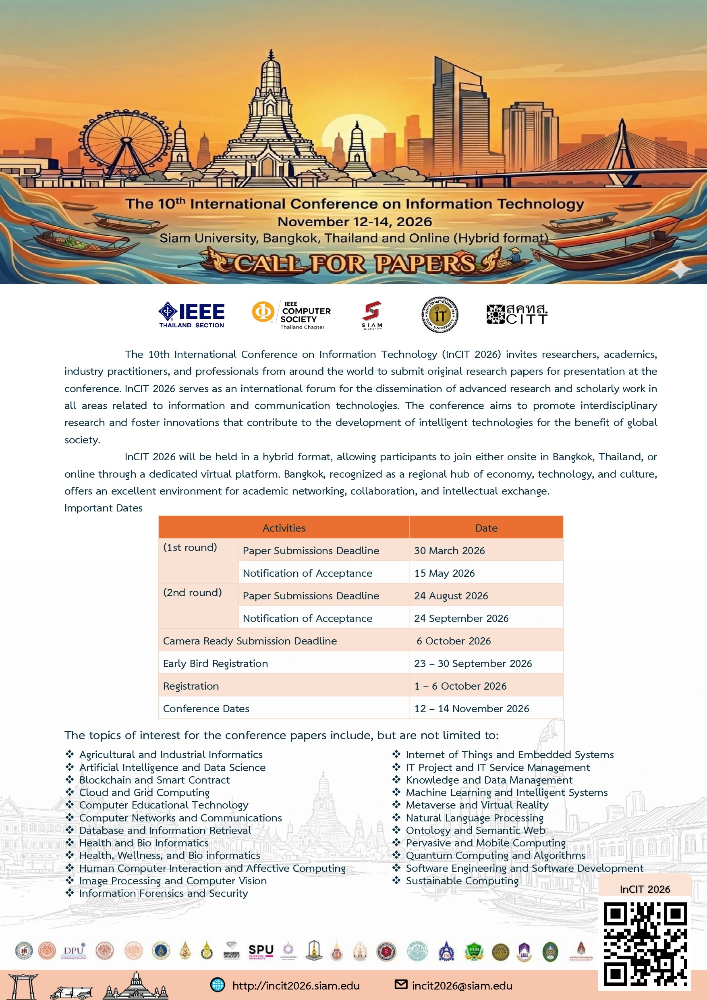

เกี่ยวกับ nCIT 2026
การประชุมวิชาการระดับชาติทางด้านเทคโนโลยีสารสนเทศ ครั้งที่ 10 (nCIT2026)
ถือเป็นเวทีสำคัญระดับพรีเมียร์สำหรับการแบ่งปันผลงานวิจัยในสาขาที่เกี่ยวข้องกับเทคโนโลยีสารสนเทศและการสื่อสาร
เราเชื่อมั่นอย่างยิ่งว่าการส่งเสริมการวิจัยที่ครอบคลุมถึงเทคโนโลยีอัจฉริยะและนวัตกรรมมีความสำคัญอย่างยิ่งต่ออนาคตของสังคม
คณะกรรมการจัดงานจึงขอเรียนเชิญนักวิจัย คณาจารย์ และนักวิชาการทุกท่านที่เกี่ยวข้องในสาขานี้
ร่วมส่งบทความและนำเสนอผลงานในการประชุม nCIT2026
การประชุม nCIT2026 จะจัดขึ้นในรูปแบบผสมผสาน (Hybrid format)
เพื่อทางเลือกในการเข้าร่วมทั้งแบบพบปะตัวจริง และแบบออนไลน์ การจัดแบบพบปะ(Physical
conference) จะจัดขึ้นที่กรุงเทพมหานคร ประเทศไทย
ซึ่งเป็นโอกาสอันดีสำหรับนักวิจัยในการประชุมเสริมความร่วมมือและถกเถียงเชิงวิชาการ
สำหรับผู้ที่ไม่สะดวกเข้าร่วมแบบพบปะ เวทีออนไลน์
จะเป็นการส่งเสริมให้สามารถเข้าถึงและเข้าร่วมการประชุมได้จากทุกมุมโลก
เรารอคอยที่จะได้ต้อนรับและให้ทุกท่านเข้าร่วมใน nCIT2026 ไม่ว่าจะเป็นที่กรุงเทพมหานคร หรือทางแพลตฟอร์มออนไลน์ เพื่อเราร่วมกันสร้างสรรค์เทคโนโลยีอัจฉริยะและนวัตกรรมเพื่อสังคม

เวทีแห่งนี้เป็นแพลตฟอร์มสหวิทยาการสำหรับนักวิจัยเพื่อนำเสนอและหารือเกี่ยวกับนวัตกรรม แนวโน้ม และความน่ากังวลใหม่ที่พบล่าสุดในเทคโนโลยีสารสนเทศ ตลอดจนความท้าทายในทางปฏิบัติและเพื่อจัดหาโซลูชัน
กำหนดการที่สำคัญ
การส่งบทความรอบที่ 1
วันสุดท้ายของการส่งบทความในรอบที่ 1
ประกาศผลการตอบรับ
ประกาศผลการพิจารณาบทความรอบที่ 1
การส่งบทความรอบที่ 2
วันสุดท้ายของการส่งบทความในรอบที่ 2
ประกาศผลการตอบรับ
ประกาศผลการพิจารณาบทความรอบที่ 2
ส่งบทความฉบับสมบูรณ์ (Camera Ready)
กำหนดการส่งบทความฉบับสมบูรณ์
ลงทะเบียนล่วงหน้า (Early Bird)
ระยะเวลาการลงทะเบียนแบบ Early Bird
ลงทะเบียนปกติ (Registration)
ระยะเวลาการลงทะเบียนปกติ
วันจัดการประชุม
ช่วงเวลาจัดงานการประชุม nCIT2026
กรุงเทพมหานคร: จุดนัดพบระดับโลกของการประชุม
กรุงเทพมหานคร เมืองหลวงของประเทศไทย คือศูนย์กลางทางเศรษฐกิจ การศึกษา และวัฒนธรรมของภูมิภาค ด้วยแหล่งท่องเที่ยวอันเป็นเอกลักษณ์โดดเด่น วัฒนธรรมที่น่าสนใจ และโครงสร้างพื้นฐานอันทันสมัย ความโดดเด่นเหล่านี้ทำให้กรุงเทพฯ เป็นสถานที่ที่เหมาะสมอย่างยิ่งสำหรับการจัดประชุมนานาชาติ
หัวข้อการประชุมในงาน
ปัญญาประดิษฐ์ และ การเรียนรู้ด้วยเครื่อง (AI & Machine Learning)
- การเรียนรู้เชิงลึกและโครงข่ายประสาทเทียม
- การประมวลผลภาษาธรรมชาติ (NLP)
- คอมพิวเตอร์วิทัศน์
- การเรียนรู้แบบเสริมกำลัง (Reinforcement Learning)
- การประยุกต์ใช้ปัญญาประดิษฐ์ต่างๆ (AI Applications)
วิทยาศาสตร์ข้อมูล และ ข้อมูลขนาดใหญ่ (Data Science & Big Data)
- การทำเหมืองข้อมูล และ การวิเคราะห์
- เทคโนโลยีข้อมูลขนาดใหญ่ (Big Data)
- การนําเสนอภาพข้อมูลเชิงบรรยาย (Data Visualization)
- แบบจำลองการทำนาย (Predictive Modeling)
- ความเป็นส่วนตัวและจริยธรรมของข้อมูล
เครือข่ายและความปลอดภัย (Networking & Security)
- สถาปัตยกรรมเครือข่ายองค์กร
- เครือข่ายไร้สาย และ อุปกรณ์พกพา
- ความปลอดภัยทางไซเบอร์ (Cybersecurity)
- อินเทอร์เน็ตของสรรพสิ่ง (Internet of Things)
- เทคโนโลยีบล็อกเชน (Blockchain)
วิศวกรรมซอฟต์แวร์ (Software Engineering)
- การพัฒนาแบบปราดเปรียว (Agile Development)
- การทดสอบซอฟต์แวร์ (Software Testing)
- กระบวนการพัฒนาต่อเนื่อง (DevOps)
- การประมวลผลแบบคลาวด์ (Cloud Computing)
- สถาปัตยกรรมซอฟต์แวร์
เปิดรับการเสนอผลงาน (Call for Papers)

Call for Papers
รับรายละเอียดอย่างครบถ้วนเกี่ยวกับแนวทางการส่งบทความ วันที่ที่สำคัญ หัวข้อการประชุม และข้อมูลการตีพิมพ์ได้ในเอกสาร PDF ฉบับนี้